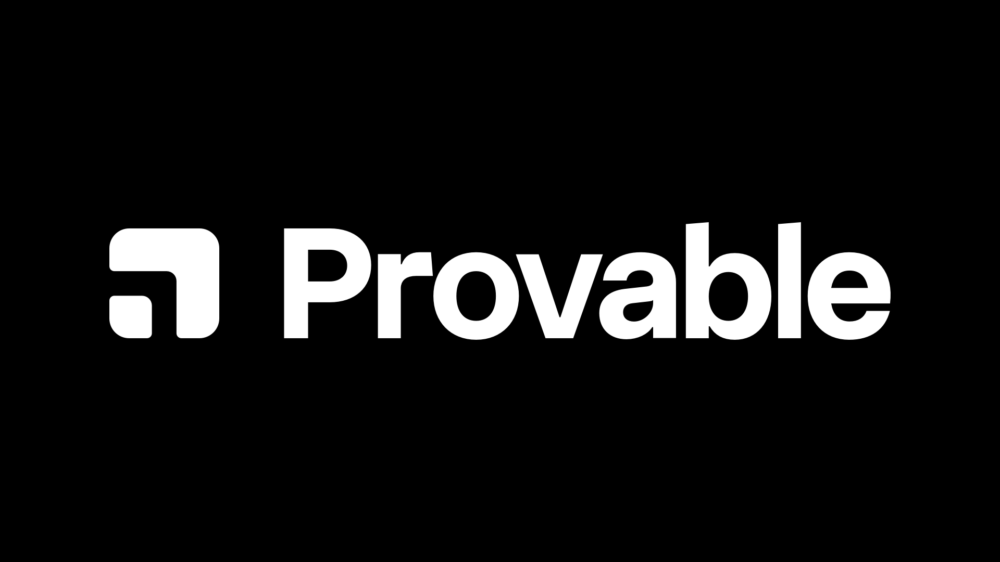
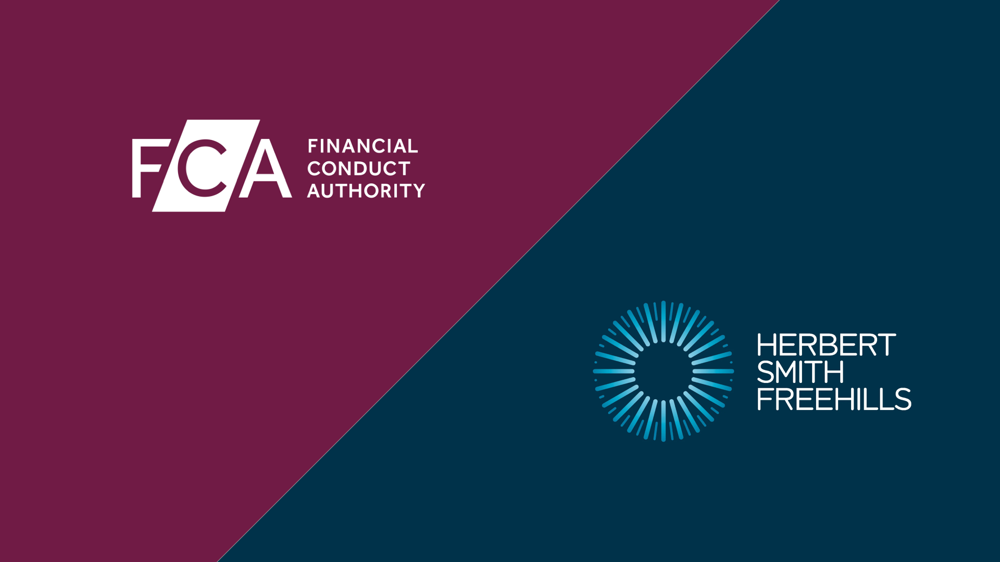

Provable
The problem: Product team understaffed. Explorer product stalled completely.
What I did: Built and onboarded a 15-person team across product, design, dev and marketing. Product shipped. 90% of hires retained.
Timeline: 9 months
I put out fires at remote B2B SaaS companies so leaders have time to get real work done.
Tell me your biggest time sink and I'll take it off your hands.

The problem: Product team understaffed. Explorer product stalled completely.
What I did: Built and onboarded a 15-person team across product, design, dev and marketing. Product shipped. 90% of hires retained.
Timeline: 9 months
The problem: Sales-led startup had just been acquired by Spotify. Team was lost, directionless, and shipping nothing.
What I did: Led an 8-month transition from sales-led to product-led. Rebuilt trust with cross-functional heads. Left the team shipping regularly with clear quarterly planning.
Timeline: 8 months

The problem: Two global enterprises needed custom software built fast and deployed into complex environments.
What I did: Coded MVPs, ran design sprints, navigated complex enterprise deployments. We built the first in-firm software for the UK's leading litigation firm, who then re-sold our services to The FCA. There we built out a location-based app from idea to deployment in just 8 weeks.
Timeline: 8-12 weeks
Imaan is that person.
When Imaan arrived at Provable our product team was under-staffed and progress on our explorer product had stalled almost completely.
9 months later we have hired and onboarded 15 people across product, design, dev and marketing. The product is live and 90% of hires have been retained.
One day he'd help with product ideation, the next managing the dev team, the next onboarding a copywriter.
We usually hire for specific roles to solve specific problems, but finding someone who I can trust to put out a variety of fires and give me the opportunity to do real deep work is very hard to find.
Imaan is that person.
Imaan's relentless focus on quality and execution was refreshing.
Imaan took over a product team from a sales-led B2B startup just after being acquired by one of the world's largest product-led orgs.
There was a lot to change:
Over an 8 month period Imaan collaborated with:
In an enterprise environment, most people just look out for #1.
Imaan's relentless focus on quality and execution was refreshing.
It's like having another founder on your team, but an objective one who just focuses on execution without politics.
Imaan and I worked together when I was fresh out of university and building a pricing platform for a Silver Circle Law firm.
I did all of the data analytics, which was the core piece, but Imaan helped with almost everything else:
It's like having another founder on your team, but an objective one who just focuses on execution without politics.
A bad hire costs 6 months of salary.
A failed product launch will push back your fundraise.
I'm much cheaper than losing momentum.
Not the exact combination of stage, size, and vertical, but that's always been an advantage.
I've worked from pre-seed to Fortune 500, across web3, fintech, regulated industries, ecommerce and more.
Fresh eyes from adjacent industries help me spot problems that insiders miss and bring solutions you won't hear in your own circles.
It's never been an issue before.
That's the whole point. I build teams and systems that keep delivering without me.
Once we've built something that works with me there, I will source, train and replace myself with a team member or a new hire to keep it running.
I'm not here to create a dependency. I'm here to make myself unnecessary.
You know what the most obvious problems are, you just lack the time to solve them, so we start there.
Q1: Gaining the trust of the team by helping them secure the quick wins you've identified, while collaborating on an exciting plan for Q2.
Q2: Now we've built some momentum and confidence it's time to execute on a plan that's been properly researched and considered.
Q3: The team now knows what excellent execution looks like, so I slowly replace myself while ensuring everything keeps running smoothly.
No pitch decks. No multi-month discovery phase. Just execution.
Book a 30-minute call. I'll learn what's broken, and I'll tell you what I'd fix first, whether you hire me or not.
If we're a fit, I charge $300/hr with discounts for longer engagements.
Or email me at hello@imaan.co